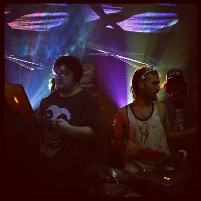
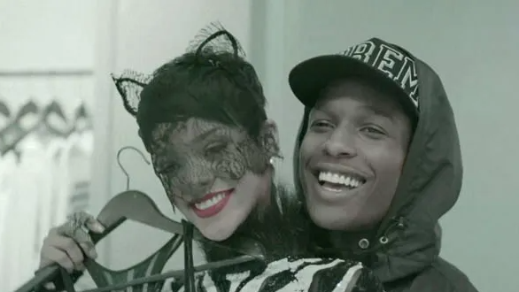

Collection III Review
Collection III is the third installment from the collection series by producer duo "Friendzone". Friendzone is a duo that was formed in 2010 by Dylan Reznick and James Laurence.
Throughout their over decade long career friendzone has produced some of the biggest songs to come out of the "cloud rap" era of hip hop. From songs such as Fashion Killa by A$AP Rocky, to Solarflare by Yung Lean, Friendzone made their mark in a time where everyone was trying to make a music career on the internet.
|  |
Laurence (Left) and Reznick performing in 2012
|
In 2017 tragedy would strike with the untilemly death of James Laurence. The future was uncertain for Friendzone and the group went into a long hiatus. In 2022 Dylan Reznick started to continue the Collection chain of albums by releases Collection II, a compilation of beats produced throughout the groups active years.
Now in 2023 Collection III has been released, featuring beats produced from 2010-2017.
|  |
A$AP Rocky and Rhianna in the Fashion Killa music video. At nearly 100 million views on youtube, it is the duos most notable work to date.
|
Collection III proves to be the most lively of the albums, full of the trance like production the group is most famous for. The album is filled with the classic production that made the early years of internet rap so legendary.
The track "CAN'T GO WRONG" is a highlight off the project, featuring artist "GUMMYBEAR". This song is filled with ethereal sounding synths and a dreamy melody that simply soothes the mind. Ontop of all this are the distorted and almost gibberish sounding vocals of GUMMYBEAR.
This type of music is perfect to just unwind and relax, simple and catchly melodies paired with hard hitting percussion. Collection III is a gift from an era of music that is long gone.
Overall Rating 84/100.